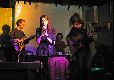

jQuery Iconize Plugin
It is a little but useful plugin that adds an image over an image. Click here to check my github page.
Requirements
jQuery >= 1.4.1 jQuery Live Query plugin(optional), to use it after the page has been loaded and the DOM updated. For more information jQuery Live Query PluginCompability
ie6+ (supports transparent pngs and opacity also. You could animate opacity), Firefox, Chrome, Safari, OperaDemos
Simple Demo
- Plugin is not applied
- Gallery icon is applied
- Video icon is applied
$('.video').iconize({
iconSrc : 'images/video.png'
});
$('.gallery').iconize({
iconSrc : 'images/gallery.png'
});
Placing icon in different places
$('#demo2 li a').each(function() {
var pos = $(this).attr("rel");
$(this).iconize({
iconSrc : 'images/video.png',
position: pos
})
});
Try it with Live Query Plugin
Click the add button to load an picture. The iconize plugin will work when the image is loaded.
var items;
$('#add').attr('disabled', '');
$.getJSON("http://api.flickr.com/services/feeds/photos_public.gne?jsoncallback=?", {
tags: "music",
tagmode: "any",
format: "json"
},
function(data) {
items = data.items;
$('#add').removeAttr('disabled');
}
);
$('#add').click(function() {
var col = ($('#demo3 li').length % 3) + 1;
var i = Math.floor(Math.random()*items.length)
$('<li class="col' + col + '"><a href="' + items[i].link + '"><img src="' + items[i].media.m + '" /></a></li>')
.appendTo('#demo3');
items.splice(i, 1);
if(!items.length){
$('#add').remove();
}
});
Using callback for effects
$('#demo4 li a').iconize({
iconSrc : 'images/video.png',
opacity: 0.6,
initCallback: function() {
this.container.css({
background: '#000'
})
var img = this.img;
var icon = this.icon;
var opacity = this.opacity;
this.container.bind('mouseenter mouseleave', function(e) {
if ( e.type == 'mouseenter' ) {
icon.fadeTo('slow', 1);
img.fadeTo('slow', opacity);
} else {
icon.fadeTo('slow', opacity);
img.fadeTo('slow', 1);
}
});
}
})